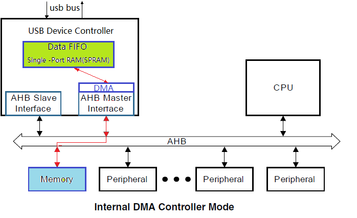
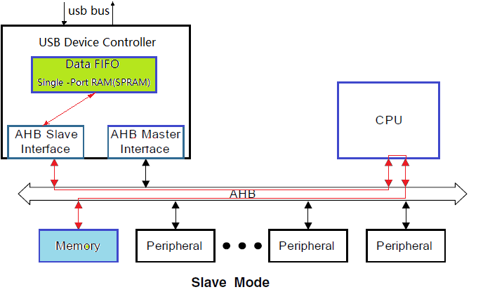

AIC USB Device Controller
ArtInChip UDC 在硬件层面实现了以下功能：
Data Mode
UDC 实现的一项主要工作是数据搬移：
-
UDC 发送时，数据先从内存 Memory 搬移到 UDC 的内部 FIFO 当中，然后由 UDC 发送到 USB 物理线路上。
-
UDC 接收时，数据先从 USB 物理线路接收到 UDC 的内部 FIFO 当中，然后再从 FIFO 拷贝到 内存 Memory 当中。
对于 FIFO 和 Memory 之间的数据搬移工作，当前 UDC 支持两种方式：
DMA Mode。
由 UDC 内部的 DMA 模块来承担数据搬移工作，只要使用寄存器配置好 FIFO 的分配，以及在寄存器中配置好 DMA 的其实地址，DMA 会完成数据的搬移。
Slave Mode。
也可以不使用 DMA 而直接使用 CPU 来搬移，这种方式非常消耗 CPU 的带宽，CPU 被简单重复的数据拷贝拖住不能做其他的事情。这种方式一般用于 Debug 模式。
Endpoint FIFO Mode
不同的 UDC 中 Endpoint 对 FIFO 的使用有多种模式，当前 UDC 选用的是 Shared Transmit FIFO
模式。在 Shared Transmit FIFO 模式中， Endpoint 对
FIFO 使用模式如下：
-
所有的
non-periodic IN endpoints共享一个transmit FIFO。non-periodic endpoints包括isochronous transfers和interrupt transfers。 -
每一个
periodic IN endpoint独立拥有一个transmit FIFO。periodic endpoints包括bulk transfers和control transfers。 -
所有的
OUT endpoints共享一个receive FIFO。
Endpoint Resource
USB 协议定义一个 Device 最多可以实现 16 个 IN endpoint + 16 个 OUT endpoint。当前 UDC 实现了 5 个 IN endpoint + 5 个 OUT endpoint，除了 endpoint 0 IN/OUT 被系统默认使用，剩下的可以被驱动动态分配使用。
如上一节所描述，UDC 是 Shared Transmit FIFO 模式， periodic IN
endpoint 需要拥有一个独立的 transmit FIFO。当前 UDC 拥有两个这样的
transmit FIFO 资源，供驱动动态分配。
如果驱动创建一个 periodic IN endpoint 它分配到了第一个 endpoint
资源，但是没有分配到 transmit FIFO 资源，也会创建失败。
Calculating FIFO Size
由上几节的描述可以看到，UDC 有多个模块需要使用内部 FIFO。包括：
-
OUT endpoints RxFIFO
-
IN non-periodic endpoints TxFIFO
-
IN periodic endpoints TxFIFO
-
DMA
UDC 内部 FIFO 总大小是固定的，那么怎么样来分配 FIFO 空间给这些模块呢？ UDC 提供了以下计算公式：
-
Receive FIFO RAM allocation
RAM for SETUP Packets: 4 * n + 6 locations in Scatter/Gather DMA mode and 5 * n+6 locations in Slave and Buffer DMA mode must be reserved in the RxFIFO to receive up to n SETUP packets on control endpoints, where n is the number of control endpoints the device core supports. The core does not use these locations, which are Reserved for SETUP packets, to write any other data.// Setup 包的保留 RAM 空间(DMA 模式)： 5*n + 6 locations，n 为 control endpoints 的个数。该部分只为 SETUP 包保留，不会写入其他数据。One location for Global OUT NAK// Global OUT NAK: 1 locationStatus information is written to the FIFO along with each received packet. Therefore, a minimum space of (Largest Packet Size / 4) + 1 must be allotted to receive packets. If a high-bandwidth endpoint is enabled, or multiple isochronous endpoints are enabled, then at least two (Largest Packet Size / 4) + 1 spaces must be allotted to receive back-to-back packets. Typically, two (Largest Packet Size / 4) + 1 spaces are recommended so that when the previous packet is being transferred to AHB, the USB can receive the subsequent packet. If AHB latency is high, you must allocate enough space to receive multiple packets. This is critical to prevent dropping of any isochronous packets.// 包接收空间： 最少 (Largest Packet Size / 4) + 1 spaces，如果空间充裕使用 two (Largest Packet Size / 4) + 1 spacesAlong with each endpoint’s last packet, transfer complete status information is also pushed to the FIFO. Typically, one location for each OUT endpoint is recommended.// 对于每个 OUT endpoint ，最后一个包需要一个位置存放 transfer complete status informationAn additional endpoint for each EPDisable is also required.// 对于每个 OUT endpoint ，还需要一个位置存放 EPDisable计算公式：Device RxFIFO = (5 * number of control endpoints + 8) + ((largest USB packet used / 4) + 1 for status information) + (2 * number of OUT endpoints) + 1 for Global NAK
-
Transmit FIFO RAM allocation
The RAM size for the Periodic Transmit FIFO must equal the maximum amount of data that can be transmitted in a single microframe. The core does not use any data RAM allocated over this requirement, and when data RAM allocated is less than this requirement, the core can malfunction.// Periodic Transmit FIFO RAM 大小必须等于在单个微帧中可以传输的最大数据量。核心不使用任何分配给这个需求的数据 RAM，当分配的数据 RAM 小于这个需求时，核心可能会发生故障。The minimum amount of RAM required for the Non-periodic Transmit FIFO is the largest maximum packet size among all supported non-periodic IN endpoints.// Non-periodic Transmit FIFO 最小 RAM 数量是所有支持的非周期 IN 端点中最大的包大小。More space allocated in the Transmit Non-periodic FIFO results in better performance on the USB and can hide AHB latencies. Typically, two Largest Packet Sizes’ worth of space is recommended, so that when the current packet is under transfer to the USB, the AHB can get the next packet. If the AHB latency is large, then you must allocate enough space to buffer multiple packets.// Transmit Non-periodic FIFO 中分配更多的空间，可以在 USB 上获得更好的性能，并可以隐藏 AHB 延迟。通常，建议使用两个最大包大小的空间，以便当当前包正在传输到 USB 时，AHB 可以获得下一个包。如果 AHB 延迟较大，则必须分配足够的空间来缓冲多个包。It is assumed that i number of periodic FIFOs is implemented in Device mode.// i 是 periodic FIFOs 的个数。计算公式：Non-Periodic TxFIFO = largest non-periodic USB packet used / 4Periodic Endpoint-Specific TxFIFOs= largest periodic USB packet used for an endpoint / 4
-
Internal Register Storage Space Allocation
When operating in Internal DMA mode, the core stores the Endpoint DMA address register (DI/OEPDMA) in the SPRAM. One location must be allocated for each endpoint.// 当在内部 DMA 模式下运行时，核心将端点 DMA 地址寄存器(DI/OEPDMA)存储在 SPRAM 中。必须为每个端点分配一个位置。For example, if an endpoint is bidirectional, then two locations must be allocated. If an endpoint is IN or OUT, then only one location must be allocated.// 例如，如果一个端点是双向的，那么必须分配两个位置。如果端点是 IN 或 OUT，则必须只分配一个位置。
Example
The MPS is 1,024 bytes for a periodic USB packet and 512 bytes for a
non-periodic USB packet. There are three OUT
endpoints, three IN endpoints, one control
endpoint.
DeviceRxFIFO=(5*1+8)+((1,024/4)+1)+(2*4)+1=279Non-PeriodicTxFIFO=(512/4)=128DevicePeriodicTxFIFO:EP1=(1,024/4)=256EP2=(1,024/4)=256EP3=(1,024/4)=256当前 UDC
periodic USB packet and 1024 bytes for
a non-periodic USB packet. There are 4 OUT
endpoints, 4 IN endpoints, 1 control
endpoint.Device RxFIFO = (5 * 1 + 8) + ((1,024 / 4) +1) + (2 * 5) + 1 = 281 = 0x119
Non-Periodic TxFIFO = (1024 / 4) = 256 = 0x100
Device Periodic TxFIFO:
EP 1 = (1,024 / 4) = 256 = 0x100
EP 2 = remain space = 0x3F6 - 0x119 - 0x100 - 0x100 = 0xDD
Internal Register Storage Space = 5 * 2 = 10 = 0xADevice RxFIFO = (5 * 1 + 8) + ((1,024 / 4) +1) + (2 * 5) + 1 = 281 = 0x119
Non-Periodic TxFIFO = (1024 / 4) = 256 = 0x200
Device Periodic TxFIFO:
EP 1 = (0x3F6 - 0x119 - 0x200) / 2 = 0x6E
EP 2 = (0x3F6 - 0x119 - 0x200) / 2 = 0x6E
Internal Register Storage Space = 5 * 2 = 10 = 0xAFIFO Mapping
由上几节可知对一个端点 Endpoint 来说，它对应的 FIFO 是动态分配的。在 DMA 模式下，一旦初始化时配置完成就不用再去管 Endpoint FIFO 的地址。但是对 Slave 模式来说，在数据收发过程中需要 CPU 访问对应 FIFO 空间。
为了方便 CPU 对 Endpoint FIFO 的访问，UDC 把 Endpoint FIFO 映射到了固定地址。其中读操作会映射到 OUT Endpoint FIFO，写操作会映射到 IN Endpoint FIFO。
Interrupt Cascade
由于 UDC 的中断状态较多，所以分成 3 级级联：
-
layer1:
GINTSTS&GINTMSK。全局中断，每一 bit 表示一个全局中断状态。其中：OEPInt表示有Out Endpoint中断发生 ，IEPInt表示有In Endpoint中断发生。 -
layer2:
DAINT&DAINTMSK。Endpoint 中断，每一 bit 表示一个 Endpoint 发生了中断。 -
layer3:
DOEPINTn&DOEPMSK，DIEPINTn&DIEPMSK。Endpoint 中断细节，每一个 Endpoint 拥有一组这样的寄存器。 寄存器中的每一 bit 代表某个 Endpoint 的某种中断状态。
Data Transfer
UDC 内部的数据收发流程如上图所示。主要的工作就是根据 USB 接收到的读写指令，把数据在 FIFO 和 Memory 之间进行搬移。具体分为几种情况：
-
OUT Endpoint。所有 OUT Endpoint 的线路数据会接收到一个统一的
Rx FIFO当中，然后根据接收数据的具体 Endpoint 配置的 Memory 地址和长度，DMA 把数据从 FIFO 搬移到对应 Memory 当中，最后产生中断。 -
IN Non-period Endpoint。所有 IN Non-period Endpoint 共享一个统一的
Tx Non-period FIFO，根据 Endpoint 配置的 Memory 地址和长度，DMA 把数据从 Memory 搬移到统一的 FIFO 当中，发送到线路上后产生中断。IN Non-period Endpoint 需要配置Next Endpoint指针，这样 DMA 处理完一个 Endpoint 的数据后才知道下一个需要处理的 Endpoint。 -
IN Period Endpoint。每一个 IN Period Endpoint 拥有自己独立的 FIFO，根据 Endpoint 配置的 Memory 地址和长度，DMA 把数据从 Memory 搬移到对应的 FIFO 当中，发送到线路上后产生中断。